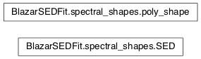

Moudule: spectral_shapes
This module contains all the classes necessary to handle the spectral
shapes, including spectral templates
Classes and Inheritance Structure

Classes relations
SED([name, nu, nuFnu, nu_residuals, residuals]) |
Class handling the SED |
poly_shape([name, nu, nuFnu]) |
Class for log-log polynomial shapes |
Module API
-
class
BlazarSEDFit.spectral_shapes.SED(name=None, nu=None, nuFnu=None, nu_residuals=None, residuals=None)[source]
Bases: object
Class handling the SED
-
fill(nu=None, nuFnu=None, nu_residuals=None, residuals=None)[source]
-
get_model_points(log_log=False)[source]
-
get_residuals(log_log=False)[source]
-
class
BlazarSEDFit.spectral_shapes.poly_shape(name=None, nu=None, nuFnu=None)[source]
Bases: object
Class for log-log polynomial shapes
-
get_model_points()[source]